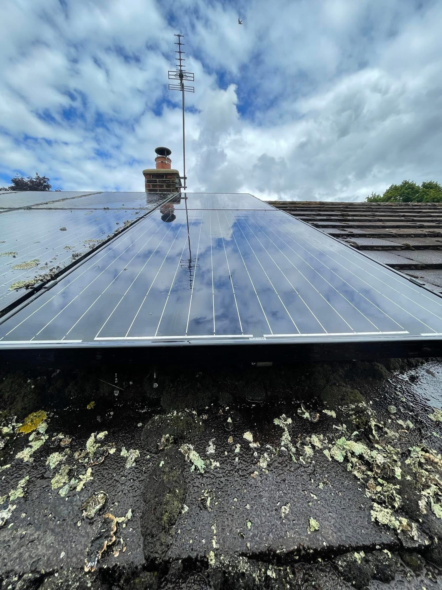
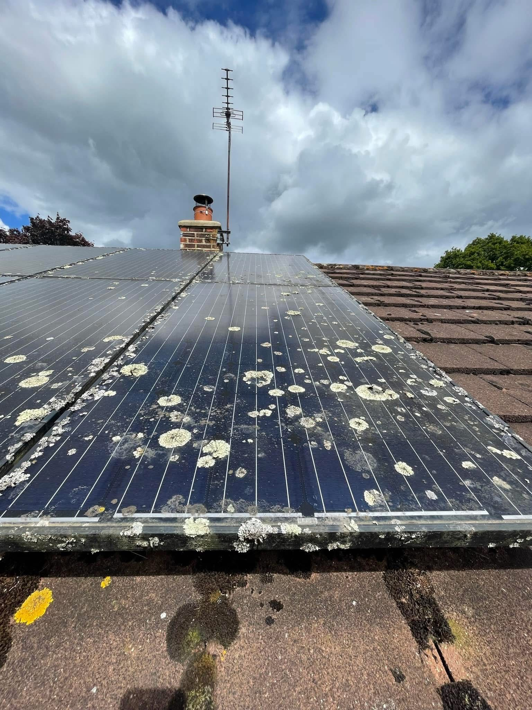
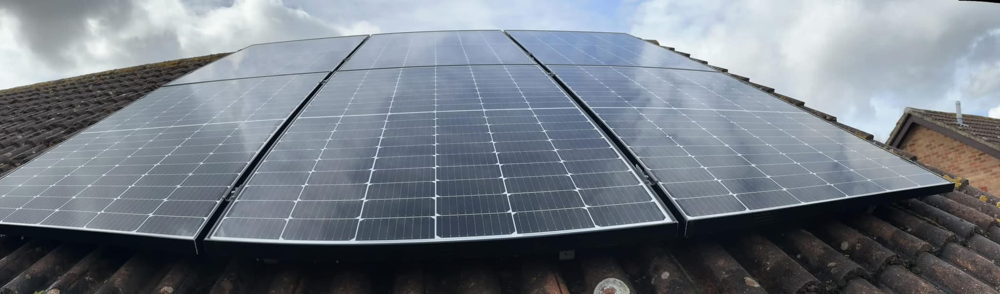
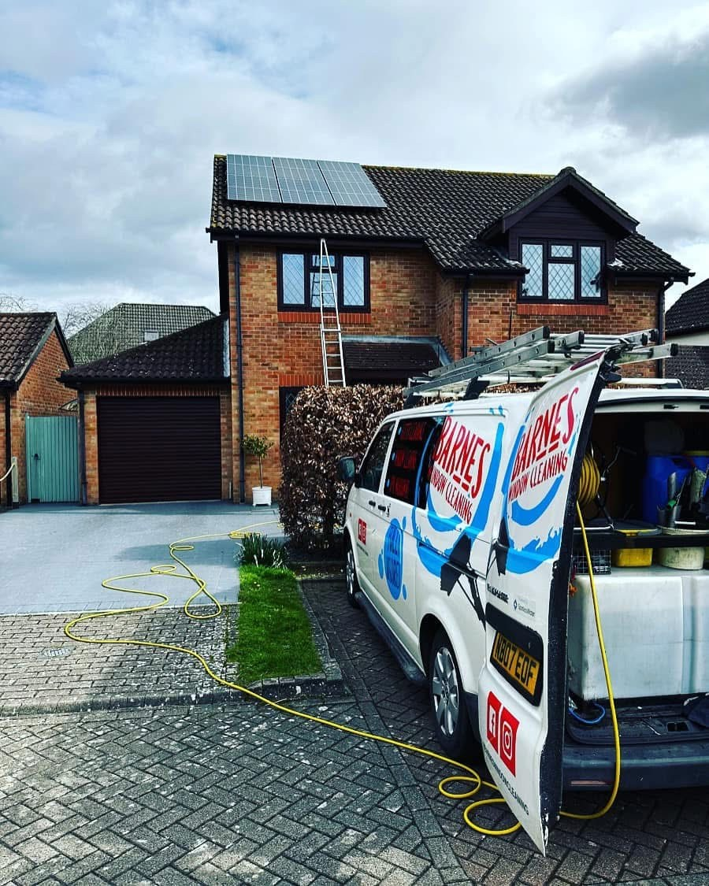
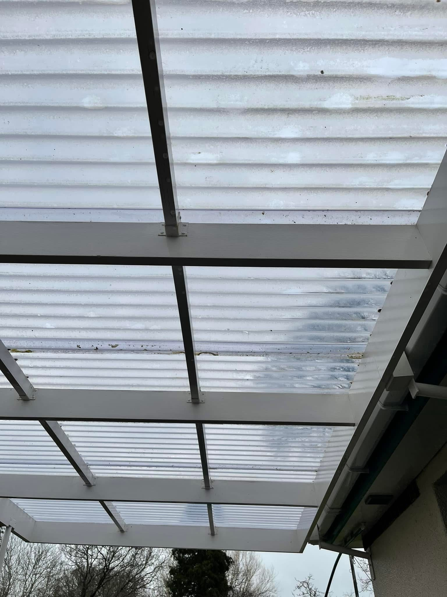
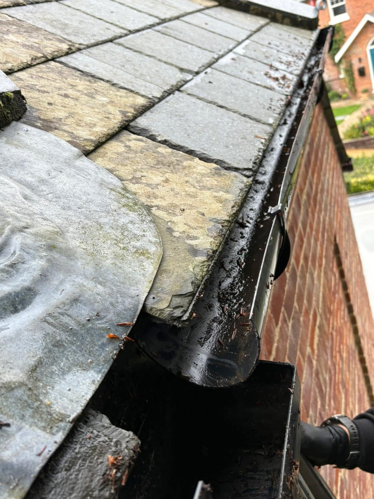
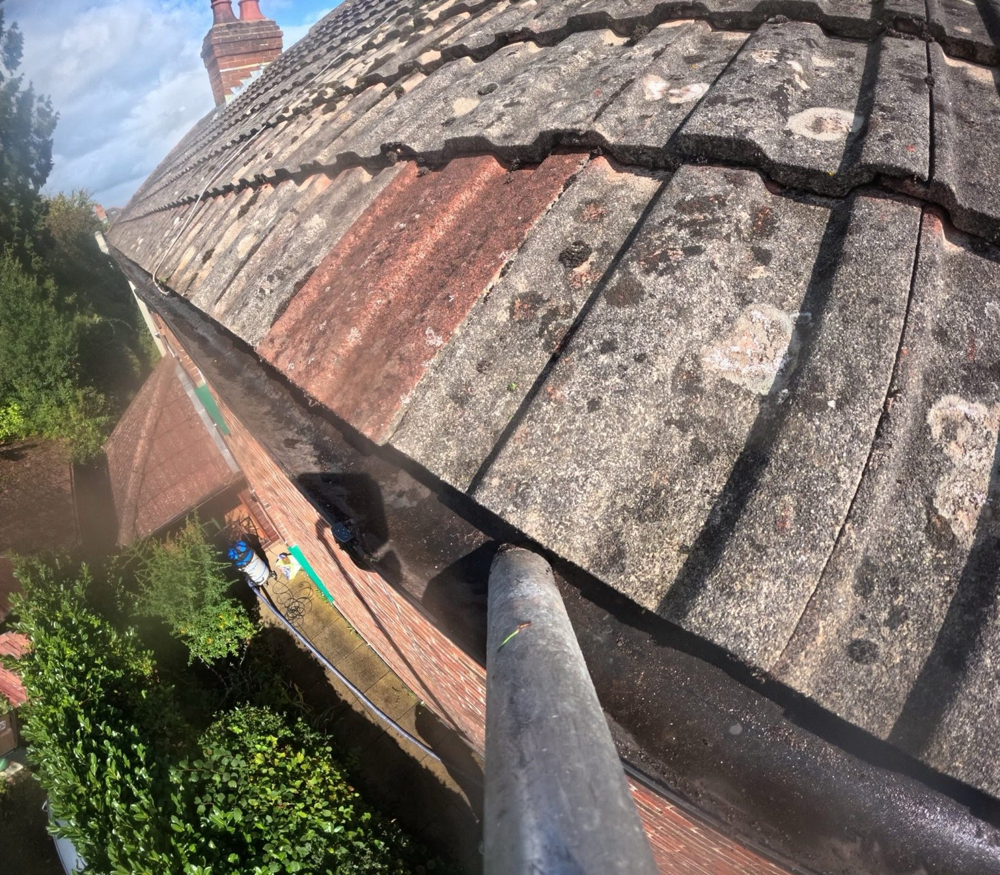

TOTTON · SOUTHAMPTON · WINDOW CLEANING
A clearer view starts with Barnes.
Domestic and commercial window cleaning in Totton and Southampton. Barnes Window Cleaning Ltd also offers gutter clearance, uPVC washdowns, solar panel cleaning and soft washing.
Window Cleaning in Totton & Southampton
Clear windows. Cleaner exterior details.
Barnes Window Cleaning Ltd provides domestic and commercial window cleaning in Totton and Southampton. The listed services also include gutter clearance, uPVC washdowns, solar panel cleaning and soft washing.
Request a quote →Explore soft washing →

Window cleaning & Gutter clearance
Window cleaning and exterior care.
See the project photos for examples of window, roofline, solar panel and canopy cleaning work. Contact Barnes with the service you need and your postcode to discuss availability.
Discuss your project →

RECENT WORK
Window cleaning & exterior work
Recent project photographs from Barnes Window Cleaning Ltd.







Totton & Southampton
Local exterior cleaning in Totton and Southampton.
Barnes Window Cleaning Ltd is based in Totton and serves Southampton. The business provides window cleaning for domestic and commercial customers, with other exterior cleaning services available by enquiry.
COMMON QUESTIONS
Before you get in touch.
Which areas do you cover?
Barnes Window Cleaning Ltd is based in Totton and serves Southampton. Include your postcode so the location can be confirmed.
Do you clean homes and commercial premises?
The business lists domestic and commercial window cleaning. Contact Barnes with details of your property and the work required.
What other services are available?
The listed services include gutter clearance, uPVC washdowns, solar panel cleaning and soft washing.
How can I ask for a quote?
Call 07412 556420, email barneswindowcleaning@hotmail.com or use the WhatsApp form below. Include your name, service, postcode and a short description.
REQUEST A QUOTE
Tell us what you have in mind.
Send the details of your project and its location. WhatsApp opens with your enquiry ready to send, where you can also attach photos.
Barnes Window Cleaning Ltd
Ready to discuss your project?
Totton & Southampton